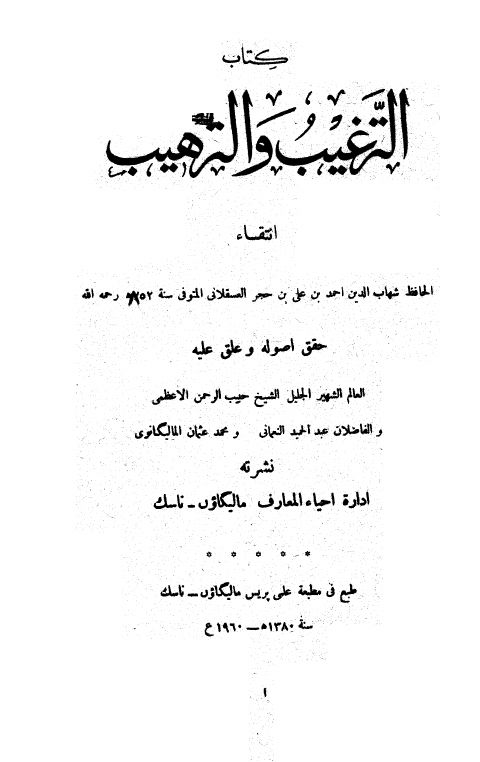

Downloads need an internet connection.
مختصر الترغيب والترهيب- ت. الأعظمي
Authors: أحمد بن علي بن حجر العسقلاني
Editors: حبيب الرحمن الأعظمي
Publishers: إدارة إحياء المعارف
**▫️ العنوان: مختصر الترغيب والترهيب- ت. الأعظمي** ▪️ المؤلف: #أحمد_بن_علي_بن_حجر_العسقلاني ▫️ المحقق: #حبيب_الرحمن_الأعظمي ▪️ الناشر: #إدارة_إحياء_المعارف ▫️ تاريخ النشر: 1380هـ 1960م ▪️ بلد النشر: #الهند ▫️ الطبعة: 1 ▪️ عدد الأجزاء: 2 ▫️ الصفحات: 750 ▪️ نوع الوعاء: #كتاب ▫️ التصنيف الرئيسي: #الحديث_وعلومه ▪️ التصنيف الفرعي: #المسانيد_الأخرى_والجوامع ۪